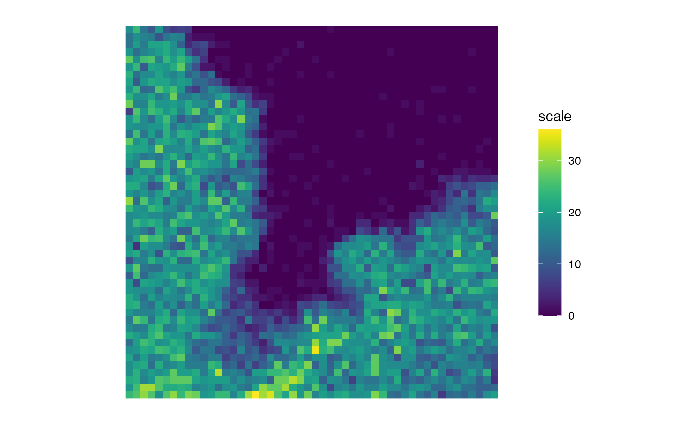
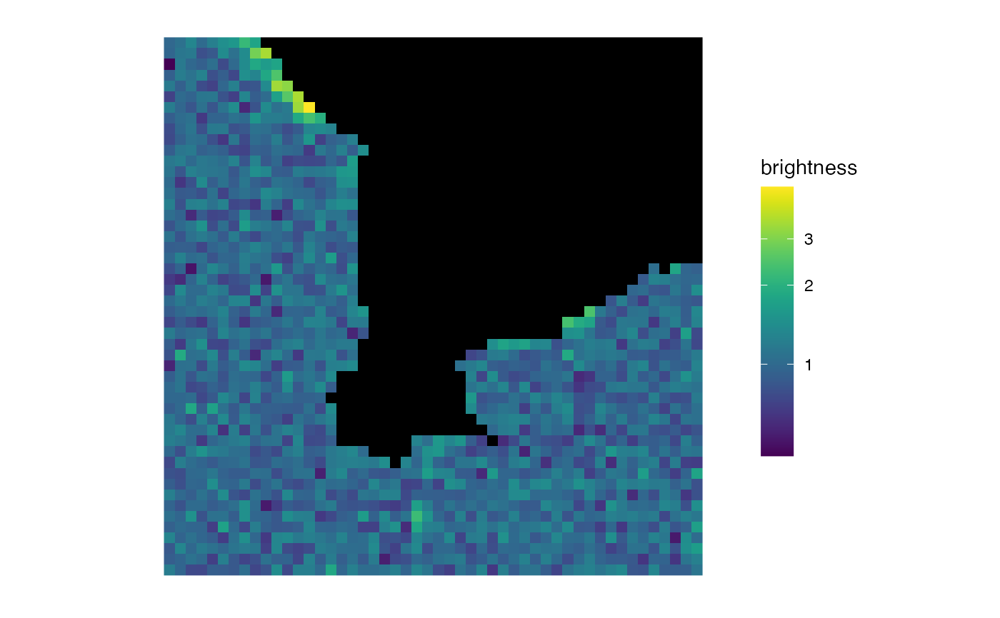

Given a matrix mat, make a raster plot of the matrix whereby in the
plot, the pixel at \(x = \)i, \(y = \)j has colour based on
the value of mat[i, j] and the \(x\) axis points right and the
\(y\) axis points down (see 'Details').
matrix_raster_plot(mat, scale_name = "scale", limits = NULL, ranges = NULL, range_names = NULL, colours = NULL, na_colour = "black", clip = FALSE, clip_low = FALSE, clip_high = FALSE, log_trans = FALSE, breaks = NULL, include_breaks = NULL)
Arguments
| mat | The matrix you wish to plot. |
|---|---|
| scale_name | A string. The title of the color scale on the right of the plot. |
| limits | This gives the user the option to set all values outside a
certain range to their nearest value within that range (if |
| ranges | A numeric vector. If you want specific ranges of values to have
the same color, specify these ranges via an increasing numeric vector. For
example, if you want the ranges 0.5-1.2 and 1.2-3, use
|
| range_names | A character vector. If your colour scale is discrete, here you can set the names which will label each range in the legend. |
| colours | If you have set |
| na_colour | Which colour should the |
| clip | If either |
| clip_low | Setting this to |
| clip_high | Setting this to |
| log_trans | Do you want to log-transform the colour scaling? |
| breaks | Where do you want tick marks to appear on the legend colour scale? |
| include_breaks | If you don't want to specify all the breaks, but you want some specific ones to be included on the legend colour scale, specify those specific ones here. |
Value
In the graphics console, a raster plot (via
ggplot2::geom_raster()) will appear with the matrix values
represented as pixel colours, with a named scale bar.
Examples
#> #>#>#> #> #> #> #>matrix_raster_plot(img[, , 1, 1])b <- brightness(img, def = "B", detrend = FALSE, thresh = "Huang") matrix_raster_plot(b, scale_name = 'brightness')matrix_raster_plot(b, scale_name = 'brightness', log_trans = TRUE)matrix_raster_plot(b, scale_name = 'brightness', log_trans = TRUE, include_breaks = 1.35)matrix_raster_plot(b, scale_name = 'brightness', log_trans = TRUE, breaks = 1:3)matrix_raster_plot(b, scale_name = 'brightness', ranges = seq(0.5, 3, length.out = 6), range_names = paste0(1:5, 'mer'))matrix_raster_plot(b, scale_name = "brightness", ranges = seq(0.5, 3, length.out = 6), range_names = paste0(1:5, "mer"), log_trans = TRUE)matrix_raster_plot(b, scale_name = "brightness", include_breaks = 1.25, range_names = NULL, log_trans = FALSE)matrix_raster_plot(b, scale_name = "brightness", include_breaks = 1.25, log_trans = TRUE)matrix_raster_plot(b, scale_name = "brightness", include_breaks = 1.25)